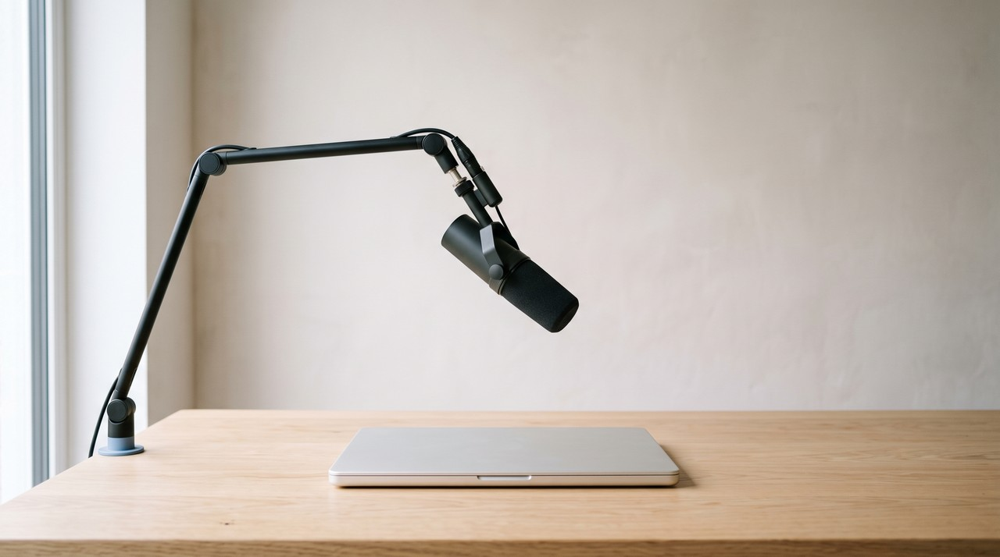

Descript's Overdub is now listed as AI Speech with custom voice clones, and it builds your clone from one recording of a short consent statement. It generates speech using ElevenLabs models in Descript's cloud, and this spends monthly AI credits that do not roll over. VoiceClone works differently, and it trains your voice from minutes of your own talking directly on your Windows PC. It keeps your voice as files on your disk, and it costs $49 once.
| Question | Descript Overdub (AI Speech) | Open source on your own PC | VoiceClone |
|---|---|---|---|
| What it learns your voice from | One recording of a short consent statement, read in English | Any audio you prepare yourself | 1 to 3 minutes of you talking for the clone, and training does better with 3 to 10 |
| Adding more of your audio later | Not possible, you make a new clone from a fresh statement | Yes, if you retrain it by hand | Yes, record more and train again with the $49 license |
| Accent | Built on a US English pronunciation model, so an accent may not be kept | Learns from the audio you give it | Learns from your own recording, English only |
| Where it runs | Descript's cloud, no offline editing | Your PC, inside a Python setup you maintain | Your PC, fully offline after the one time setup |
| Computers | Windows 11 or macOS 14 and newer, plus a web app | Windows, Linux or Mac with Python, best with an NVIDIA card | Windows 10 or 11, faster with an NVIDIA card |
| Fixing a wrong word | Regenerate patches it inside your real recording, English only, 250 characters at a time | By hand, one line at a time | Fixes one word inside a generated take, not inside a recording you made |
| Cost | From $16 a month billed yearly or $24 month to month, credits reset every month | Free, plus your own time | Free to clone and train one voice, $49 once for everything |
By Inam, who built VoiceClone because he wanted his own voice to stay on his own computer. More of my engineering write ups live at designesh.com. Last updated 22 September 2026.
You probably first heard your own voice come out of a computer if you edit videos or podcasts in Descript. You say a word wrong, so you type the right one, and Descript says it for you in your voice. It is a clever tool for patching a small mistake inside a recording, and I am not going to pretend otherwise.
Descript's own help page on voice clones says the clone comes from one recording, which is the short consent statement you read out when you set it up. The same page says you cannot add more voice samples or training data to an existing clone. So if it does not sound like you, the only fix is to read the statement again and make a new clone.
That page also explains that Descript's clones are built on a model based on US English pronunciation, and this means an accent may not come through accurately. The fix it suggests is switching between the ElevenLabs v2, v3 and v4 models in the settings and testing which one sounds closer. So when Overdub speaks, you are really hearing an ElevenLabs model working from a few sentences of you on somebody else's servers.
If your clone does not sound like you, or your accent is not American, give a voice model minutes of your real talking instead of one short statement, and train it on your own PC.
Why does an Overdub voice depend on Descript and your plan?
You need to picture where the voice actually lives. Descript writes every edit to its cloud the moment you make it, and its help centre says plainly that it does not support offline editing. So your clone belongs to that account, and the speech it makes is generated on Descript's side with the ElevenLabs model you picked.
Every line of AI speech also spends AI credits, which is Descript's meter for its AI features. Its page on credits says the allowance resets when your plan renews. It also says unused credits do not roll over, and a longer piece of text to speech costs more. So a quiet month does not save anything up for a busy one.
On Descript's pricing page, custom voice clones come with the Hobbyist plan and above, which starts from $16 a month billed yearly or $24 month to month. The Free plan lists them as limited, with 100 AI credits given once. If you cancel, your projects stay, but every feature your old plan had and the Free plan does not is switched off.
Some people leave the cloud for an open source model they run themselves. The one I built my tool on is GPT-SoVITS, which costs nothing. But the setup steps on its GitHub page ask a lot of a normal person, because you need a matching set of Python, PyTorch and CUDA versions, and CUDA is the toolkit NVIDIA graphics cards need. You also need to type commands into a terminal, so that removes the subscription but hands you a maintenance job instead.
What makes a voice clone sound like you, and stay yours?
A voice clone can only copy what it has heard of you. A few sentences read in one sitting give a model your basic pitch and tone, but they miss your rhythm across a long thought, the way you slow down before a number, or how your voice lifts at the end of a question. A few minutes of you talking naturally carry all of that. Training is the step where the software studies that recording properly and saves what it learned.
This is also where an accent is kept or lost. My own English has a Pakistani accent, and the accent was still mine when I first heard my own clone read a line I had only typed. That happened because the model learned directly from my recording, and Descript's own warning about its US English model is the exact same point seen from the other side.
When the training happens on your own computer, what it learned is saved as a file on your disk. That file is the trained model, and it is yours in the exact same way a photo on your drive is yours. No plan renewal can reset it, and no company decision can switch it off.
Here is the check I use on any voice tool, my own included. Pull the network cable or switch the Wi-Fi off, and then ask it for one sentence. If it still speaks with the internet off, the voice is yours. If it cannot, you are paying rent on it.
How does VoiceClone keep your voice on your own PC?
VoiceClone puts that same GPT-SoVITS engine inside a normal Windows app for Windows 10 and 11, so there is no Python to install and no terminal to open. You add 1 to 3 minutes of yourself talking naturally, and it checks the recording for noise, clipping and volume before it clones. You hear an instant clone about a minute later. The Make it perfect button then trains a true copy of your voice on your PC, and that takes under an hour on a normal NVIDIA graphics card.
The trained voice is saved as files in the app's own folder, and so it goes into your normal backup like anything else on the disk. Nothing is uploaded at any step. The first run downloads the engine, which is about 1.3 GB, and this takes 10 to 30 minutes, but after that it works fully offline.
Fixing a word works differently from Descript. VoiceClone makes several takes of each line, and it listens to each one with a speech recognizer and grades every word. When one word is still wrong you fix just that word and keep the rest of the take. It fixes words inside the narration it generated, and it does not fix words inside a recording you made with a microphone.
The price is a $49 one time license, and there is no subscription and no credits behind it. The free version lets you clone and fully train one voice and then generate 3 times. I built it this way so you hear your real trained voice before you pay anything.
I need to be honest now, because Descript does real things better. It is a full editor where you cut video by editing the transcript like a document, and its Regenerate feature replaces a word inside the recording you actually made and tries to adjust the on camera video to match. VoiceClone does not edit video at all. Descript also runs on a Mac and in a browser, and its clone is usually ready within minutes with no graphics card needed.
VoiceClone speaks English only, it cannot sing, and it works but slowly without an NVIDIA card. So Regenerate is built for exactly that job if you film yourself talking and mostly need to patch the odd word. If you write scripts and want them read in your own voice, with your own accent and no monthly meter, that is what VoiceClone is for.
How do you move from Overdub to a voice on your own PC?
Your old Descript projects already hold the best training material you have. That material is hours of you talking into your own microphone, so the move starts with them.
- Export a few minutes of your real voice. You pick clean narration from an old project with no music or second speaker under it, and you export it as an audio file. Descript says your projects stay accessible after you cancel, but it is simpler to do this while everything on your plan still works.
- Use your recorded voice, not Overdub's. Lines Descript generated are an ElevenLabs model's version of you, and a clone trained on them learns that version, and that includes small glitches. Descript's own rules refuse to build a clone from audio that came from an AI, and that is very good advice for any tool.
- Record a fresh sample if nothing clean is left. A quiet room and a few minutes of normal talking beat any studio script. I explain the room, the distance and what to say in how to record a voice sample that clones well. If you want to know why 3 to 10 minutes suit training better than one, the measurements are in how much audio it takes to clone a voice.
- Make the clone, then train it. You add the recording, listen to the instant clone, and press Make it perfect when you are happy with the sample. What training does to the sound and how long it runs on a normal card is explained in training a voice clone on your own PC.
- Keep editing wherever you like. VoiceClone exports WAV and MP3, plus SRT and VTT subtitles. So the narration goes into Descript or any other editor as an ordinary audio track.
You can keep Descript as your editor and still keep your voice at home, because the editor only ever sees an audio file. And since Descript's voices run on ElevenLabs models, my honest ElevenLabs comparison covers the same ground from the other side.
FAQ
Is Descript Overdub free?
Descript's Free plan lists custom voice clones as limited and gives 100 AI credits once. Full use starts with the Hobbyist plan at $16 a month billed yearly, or $24 month to month. Every line of AI speech spends AI credits that reset each month.
Can I add more audio to my Descript voice clone?
No, because Descript's help centre says an existing clone cannot take more voice samples or training data. The only route is a new clone from a fresh reading of the consent statement. How you read that statement is what shapes the voice.
Why does my Descript clone lose my accent?
Descript says its clones are built on a model based on US English pronunciation, so accents are not always kept accurately. It suggests trying the ElevenLabs v2, v3 and v4 models in its settings. But a model trained on minutes of your own talking learns your accent from you instead.
Does Descript Overdub work offline?
No, Descript's help centre says it does not support offline editing, and it saves every edit to its cloud as you work. VoiceClone works fully offline once the one time setup download is done.
Sources: Descript's help centre pages on creating a custom voice clone, using Regenerate, media minutes and AI credits, cancelling a subscription and saving work to the cloud, Descript's pricing and download pages, and the GPT-SoVITS project page on GitHub. I read all of them on 22 September 2026.
Hear your own voice come back.
The free Windows app clones and fully trains one voice, yours, on your own PC. No account, no upload, and the download starts right away.